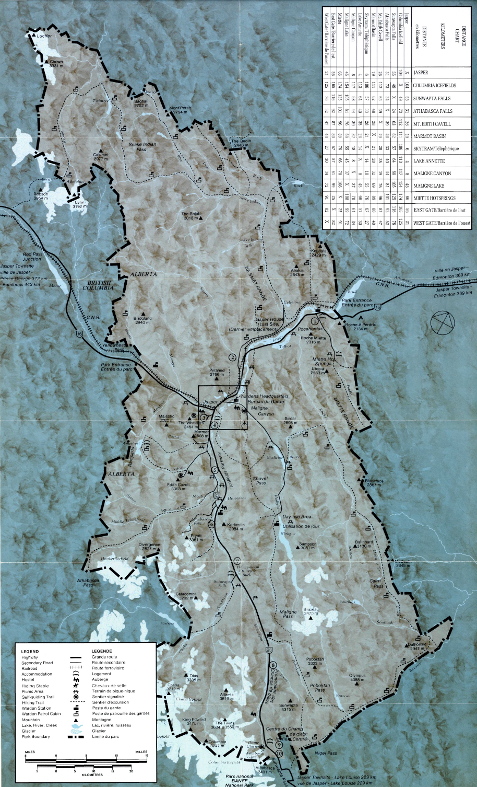

About the Park
Jasper National Park was established in 1907 and was the fifth National Park created in Canada. It is located in the Rocky Mountains in Alberta and spans over 11,000 km2.
Alberta

Jasper National Park was established in 1907 and was the fifth National Park created in Canada. It is located in the Rocky Mountains in Alberta and spans over 11,000 km2.
I am a big fan of the colours in these ones. The way the ink bleeds into the paper in the scans reminds me of why I love paper maps so much. The layout of this park really makes me wonder how the land mass of National Parks are chosen and it is just so cool to look at.

1938

1942

1947

1961

1962

1964
Amazing. The amount of changes this map went through in just 16 years is so interesting to me because it really shows the potential of experimenting with design within maps while still maintining an effective and clear map which is just really awesome.

1970

1983

1984

1986
Did we need to take away all the personality from the last ones? I don't think so. And yet...

2015

2018

2021

2025